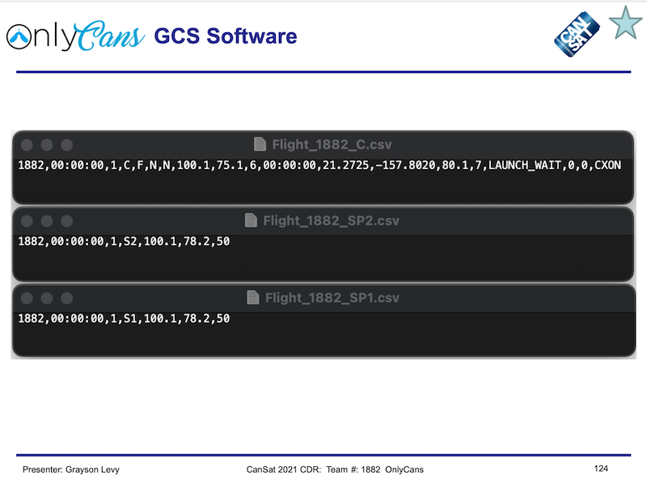

For the CanSat competition of 2021 the goal was to design and implement a launchable can satellite which contained two devices that upon descending from the satellite would collect data. The design had to include two autorotating maple seed science payloads that would collect specific data. Examples of the data to be collected included but not limited to was temperature, rotation speed, altitude, telemetry, and many others. The canister part of the design was left up to the teams to design following certain guidelines. The canister had to eject the payloads as well as receive the data from the maple seeds in order to relay the data back to the control station. The team was split into two subteams one for electrical and one for mechanical.
I was a member of the electrical team. Our goal was to design the code to collect data, communicate between all devices, and the implementations of the devices to record the raw data upon descent. In order to do this we had to quickly learn about Arduinos and how to connect the individual devices to work in unisom. I spent many hours soldering together breakout boards, burning fingertips, and destroying a few parts on the way to completing the project. A major portion of my involvement in the project involved saving the data to the sd card, collecting the telemetry and sending the data through a MQTT broker.
This was the first major project I was a part of at Kapiolani Community College. It had a major learning curve to figuring out many new things that I had never been exposed to before. The amount of knowledge I gained from countless hours exploring the web looking for answers and exploring different ways to code things was the most valuable aspect I took away from this project. I also learned a lot about how to work with a team on a year long project, especially during the times of covid. Many problems arose but when we put our heads together we always seemed to figure it out.
You can learn more at the CanSat Competition website.